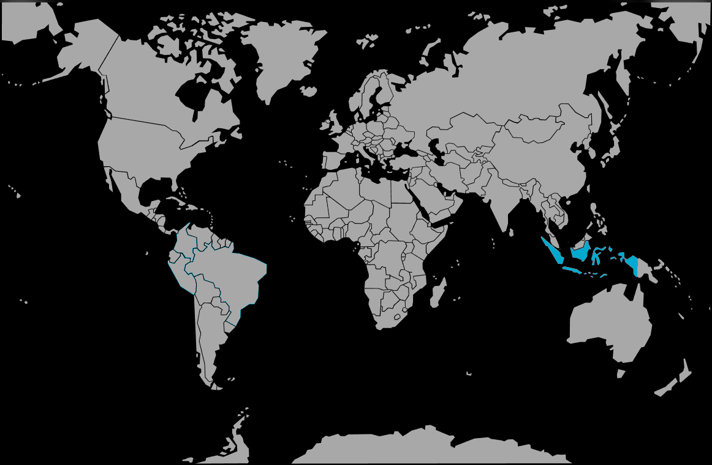

Systématique
- Ordre : Anabantiformes
- Famille : Osphronemidae
- Genre : Betta
- Espèce : Betta hendra

Betta hendra est un betta de petite taille du complexe coccina, endémique de Bornéo; il se distingue par une robe sombre traversée de reflets bleus à bleu‑vert très intenses sur le corps et les nageoires.
Les adultes mesurent environ 3 à 4 cm, avec des mâles plus vivement colorés et aux nageoires plus développées que les femelles, qui restent plus discrètes et légèrement plus trapues.
Betta hendra est un poisson timide et discret, qui fréquente les couches d’eau médiane et supérieure sous un couvert végétal dense; en aquarium, il apprécie les bacs très plantés, sombres, avec de nombreuses cachettes et une faible agitation.
L’espèce est territoriale, surtout entre mâles; la maintenance se fait de préférence en couple ou en petit groupe bien structuré dans un bac spécifique, ou éventuellement avec des invertébrés pacifiques dans un environnement très calme.
Mode : constructeur de nid de bulles; le mâle aménage un nid sous une feuille, une racine ou un support flottant, puis y rassemble les œufs après l’accolade.
Le mâle garde ensuite œufs et larves jusqu’à la nage libre, période durant laquelle il devient plus territorial; une eau très calme et une surface peu agitée sont indispensables pour la stabilité du nid.
Dimorphisme sexuel : les mâles sont plus grands, plus allongés, avec des nageoires impaires plus étirées et une coloration bleu‑vert irisée très marquée; les femelles ont un corps plus court, des couleurs atténuées et une nageoire ventrale moins développée.
Espérance de vie : en aquarium bien entretenu, la longévité se situe en général entre 3 et 5 ans pour cette petite espèce de betta sauvage.
L’espèce provient de fossés forestiers, mares et zones inondées de tourbières de Bornéo, à eau noire, très douce et fortement chargée en tanins, avec un substrat couvert de feuilles mortes et un éclairage naturel très filtré par la canopée.
Répartition
Origine naturelle :
- Bornéo (Kalimantan Tengah, Indonésie), dans les forêts de tourbières autour de Palangkaraya.
- Fossés, mares et bras morts d’eau noire à très faible courant, souvent en pleine forêt.
L’eau y est ambrée à brun foncé, la visibilité réduite et le fond recouvert de feuilles et de débris végétaux, ce qui doit inspirer le décor de l’aquarium.
Paramètres de maintenance
Température : 24 à 28 °C.
pH : environ 4,5 à 6,5, avec une préférence pour une eau nettement acide.
GH : 0 à 5 °dGH; eau très douce, idéalement à base d’eau osmosée ou très peu minéralisée, enrichie en tanins (feuilles, fruits d’aulne, tourbe).
Courant : faible; un léger mouvement d’eau suffit pour l’oxygénation, sans perturber les nids de bulles.
Volume conseillé : à partir de 20–30 L pour un couple, davantage pour un petit groupe en spécifique, avec de nombreuses cachettes et une forte couverture végétale.
Régime alimentaire
Régime : carnivore à tendance insectivore; dans son milieu naturel, l’espèce consomme de petites proies aquatiques et des insectes tombant à la surface.
En aquarium, il convient de privilégier les proies vivantes et congelées de petite taille (daphnies, artémias, larves de moustiques, microvers), les aliments secs étant acceptés plus lentement et seulement après acclimatation.
Une alimentation variée, distribuée en petites rations, permet de maintenir une bonne condition générale et favorise la reproduction de ce betta sauvage.